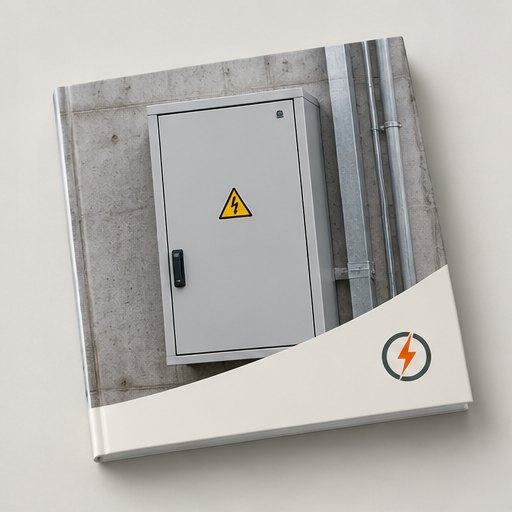
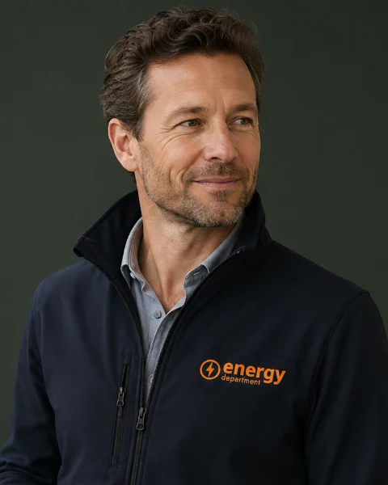

Schil, installaties en verlichting
Isolatie en kierdichting, ruimteverwarming, ventilatie, warm tapwater, led met sturing, zonnestroom op eigen dak en het energiebeheer- en registratiesysteem.
Rapporteren bij RVO · wij nemen het over
Gebruikt uw locatie vanaf 50.000 kWh elektriciteit of 25.000 m³ aardgas (equivalent) per jaar? Dan kunt u onder de energiebesparings- en informatieplicht vallen. U rapporteert in beginsel iedere vier jaar welke maatregelen u hebt uitgevoerd. Wij nemen dat volledig van u over.
Kosteloos en vrijblijvend · Reactie binnen 1 werkdag · Geen verplichtingen achteraf
Laatst juridisch gecontroleerd op 17 augustus 2026
De regels wijzigen waarschijnlijk in 2027Voorstel · nog niet definitief
De overheid werkt aan een wijziging waarbij onder meer de wettelijke terugverdientijd van vijf naar zeven jaar gaat. De internetconsultatie over de Omgevingsregeling loopt tot 19 augustus 2026 en de beoogde inwerkingtreding is 1 juli 2027. Op 17 augustus 2026 is de definitieve tekst nog onbekend: de huidige vijfjaarsregel blijft leidend totdat de nieuwe regels formeel in werking treden.
Bekijk wat er verandertMaatregelen met een natuurlijk moment kosten voorbereidingstijd: vervanging, groot onderhoud en levertijden lopen al snel op. Wie nu begint, kan kiezen. Wie wacht, moet.
Zet uw locaties nu op de planningAl 12+ jaar de partner voor zakelijke energie en compliance
Rapportages ingediend voor bedrijven in industrie, vastgoed, horeca en retail
Uw rapportage voldoet aan wat de omgevingsdienst toetst
SKG-IKOB-gecertificeerd voor energielabels, BRL 9500-W en 9500-U
Eén vraag per stap, over één locatie. U krijgt een indicatie met onderbouwing en een concrete vervolgstap, zonder uw gegevens achter te laten.
{{ wizStapLabel }}
Geen e-mailadres nodig · u blijft anoniem
{{ wizHint }}
Waarom deze uitkomst
{{ resWaarom }}
Wat dit betekent
{{ p }}
Uw eerstvolgende stap
{{ resStap }}
Aandachtspunten in uw situatie
{{ l }}
Wilt u dat wij dit definitief voor uw locaties controleren?
In de kosteloze intake toetsen wij uw verbruik per adres, de afbakening en de toepasselijke maatregelen. Uw antwoorden hierboven nemen wij mee in het formulier, zodat u niets dubbel invult.
Dit is een indicatie en geen juridisch besluit.
Een indicatie op basis van uw antwoorden, geen juridisch besluit. De formele afbakening van gebouw en activiteit wordt beoordeeld door het bevoegd gezag; gebruik voor de wettelijke toets de Wetchecker van RVO.
Woonfuncties zijn buiten de energiebesparingsplicht geplaatst.
Volledig eigen hernieuwbare energie kan tot een uitzondering leiden, maar alleen als er nooit energie uit een energienetwerk wordt gebruikt.
Kort gebruik: voor gebouwgebonden maatregelen bestaan uitzonderingen voor onder meer gebouwen die maximaal twee jaar worden gebruikt.
Geen gebouw: bouwwerken die geen gebouw zijn en gebouwen die onderdeel zijn van onteigening kennen eigen uitzonderingen.
Zelf opgewekte energie die u op de locatie gebruikt, telt mee in het energiegebruik. Wat u teruglevert aan het net, telt niet als lokaal gebruik.
Meerdere ondernemingen in één gebouw: de feitelijke zeggenschap over activiteit en maatregelen is een bruikbare aanwijzing; het bevoegd gezag beoordeelt de afbakening.
De moeilijkste vraag van dit dossier. Tot 1 december 2027 kunnen uitvoering en rapportage bij verschillende partijen liggen.
Let op
{{ rolLetop }}
| Onderwerp | Wie voert uit | Wie rapporteert | Aandachtspunt tot 1-12-2027 |
|---|---|---|---|
| Gebouwgebonden maatregelen | Doorgaans de gebouweigenaar, tenzij contractueel anders geregeld | De informatieplichtige voor die locatie | Bij bestaande 2023-plichtigen kan de drijver van de inrichting nog de formele rapportageadressaat zijn |
| Activiteits- en procesmaatregelen | Degene die de relevante activiteit uitvoert | Dezelfde partij, of een gemachtigde intermediair | Zelfde overgangsvraag voor de rapportage als bij het gebouw |
| Multi-tenantgebouw | Eigenaar voor gemeenschappelijke en gebouwgebonden delen; gebruikers voor eigen activiteiten | Per afgebakende situatie | Energieaggregatie en de oude inrichtingsbegrenzing maken dit complex |
| Rapportage door een adviseur | Ongewijzigd: de partij die de maatregel moet nemen | Gemachtigde intermediair, bijvoorbeeld Energy Department | De opdrachtgever blijft verantwoordelijk voor de inhoud |
| Vastgoedportefeuille | Eigenaar, volgens de goedgekeurde portefeuilleroutekaart | Eigenaar: adres- en energiegegevens blijven verplicht | De portefeuilleaanpak vervangt de rapportageplicht niet |
| Toezicht | Omgevingsdienst namens het bevoegd gezag; gemeente meestal bevoegd gezag, provincie bij complexe Bal-bedrijven |
Sinds 1 januari 2024 geldt de Omgevingswet, met de energiebesparingsplicht in het Besluit activiteiten leefomgeving (Bal) en het Besluit bouwwerken leefomgeving (Bbl). Voor ondernemingen en instellingen die op 1 december 2023 al informatie- of onderzoeksplichtig waren, werkt overgangsrecht door tot 1 december 2027. Voor die groep blijft de oude systematiek rond de inrichting en de drijver daarvan relevant voor de rapportage, terwijl de uitvoering van maatregelen al volgens Bal en Bbl moet worden begrepen.
De Erkende Maatregelenlijst energiebesparing (EML) is voor de meeste informatieplichtige organisaties de eenvoudigste route: staat een maatregel erop en is die toepasselijk, dan hoeft u zelf niets te berekenen.
Isolatie en kierdichting, ruimteverwarming, ventilatie, warm tapwater, led met sturing, zonnestroom op eigen dak en het energiebeheer- en registratiesysteem.
Lekverlies en persdruk, condensor- en verdamperonderhoud, productkoeling, grootkeuken en de koeling van uw serverruimte.
Leidingisolatie en condensaatterugvoer, toerenregeling van motoren, ovens en droging, en warmteterugwinning uit proceskoeling.
Alleen de toepasselijke maatregelen
Niet iedere techniek geldt in ieder gebouw. De EML kent technische en economische toepassingsvoorwaarden.
Natuurlijke momenten
Een deel van de maatregelen wordt pas verplicht bij vervanging, groot onderhoud of verbouwing. Dat maakt planning mogelijk.
Een gelijkwaardig alternatief mag
Een andere oplossing volstaat als die ten minste dezelfde energiebesparende werking heeft. Leg de onderbouwing vast in uw dossier.
Categorie
Type organisatie
{{ emlCount }} in beeld
{{ m.naam }}
{{ m.wat }}
{{ m.note }}
Voor deze combinatie staan hier geen clusters. Kies een bredere categorie of een ander type organisatie.
Een redactioneel overzicht van de EML-onderdelen Gebouwen, Faciliteiten en Processen, bedoeld om te bepalen wat op u van toepassing kan zijn. De wettelijke lijst met alle toepassingsvoorwaarden staat op de EML-pagina van RVO. Wij werken altijd met de actuele versie.
Meer dan alleen besparen
Bal en Bbl omvatten ook hernieuwbare energieproductie, tot maximaal het jaarlijkse gebruik per energiedrager, en bepaalde vervangingen van energiedragers die de CO₂-emissie verminderen.
Label A++ of beter?
Bij een voldoende hoog energielabel behandelt het RVO-rapportagesysteem de gebouwmaatregelen, met uitzondering van het energiebeheer- en registratiesysteem, afhankelijk van de gebruiksfunctie als volledig uitgevoerd. Is een maatregel feitelijk niet uitgevoerd, dan blijft uitvoering nodig.
Wij lopen uw locatie langs, bepalen welke maatregelen toepasselijk zijn en welke aan een natuurlijk moment hangen. U krijgt één overzicht met de status per maatregel en de bewijsstukken die nog ontbreken.
Werkt u volledig via de toepasselijke EML? Dan hoeft u niet voor iedere maatregel zelf de terugverdientijd te berekenen. Die toets is in de EML-systematiek al vooraf gedaan.
Verwar de EIA-rekenhulp niet met de wettelijke berekening
De rekenhulp voor de Energie-investeringsaftrek gebruikt een eenvoudiger verhouding tussen investering en energiekostenbesparing en neemt financieringskosten níet mee. Voor de energiebesparingsplicht geldt de methodiek uit de Omgevingsregeling. Twee verschillende toetsen, twee verschillende uitkomsten.
Wettelijke methodiek, hoofdlijn
Ide relevante (meer)investering
Fde financieringskosten volgens de voorgeschreven methodiek
Bde jaarlijkse kostenbesparing
Voor de financieringscomponent hanteert de officiële toelichting onder meer Kfin = r × (0,5 × I) en F = Kfin × (I/B), met een vastgelegd rentegetal van 0,067.
Officieel rekenvoorbeeld
Inclusief financieringskosten komt dat uit op een terugverdientijd van circa 4,9 jaar: binnen de wettelijke grens van vijf jaar.
Wij coderen geen eigen energieprijzen: de berekening volgt de methodiek en de standaardwaarden uit bijlage XV van de Omgevingsregeling. Voor bepaalde glastuinbouwsituaties geldt een specifieke methodiek in bijlage XVa. Voor 2027 wordt gewerkt aan gewijzigde standaardprijzen en een nieuwe zevenjaarsgrens.
In beginsel eens per vier jaar; de volgende reguliere datum is 1 december 2027. Dit is de route van gegevens naar een ingediende rapportage.
Het energiegebruik per adres wordt getoetst aan de drempels en gebouw en activiteiten worden afgebakend.
U levert: de jaarafrekening of twaalf maandfacturen per aansluiting.
Wij nemen over: de toetsing, inclusief de vraag of de onderzoeksplicht of EED meespeelt.
Per locatie wordt de toepasselijke EML doorlopen: uitgevoerd, niet toepasselijk of gepland op een natuurlijk moment.
U levert: toegang tot de installaties en bestaande facturen, foto’s en opleverrapporten.
Wij nemen over: de inventarisatie en de onderbouwing van gelijkwaardige alternatieven.
De gegevens worden in het RVO-format gezet. Bij meer dan vijf locaties gaat dat via de XML-route.
U levert: eHerkenning eH2+ als u zelf indient, of een machtiging aan ons.
Wij nemen over: het invullen, de controle op volledigheid en het versiebeheer van het dossier.
Tussentijds opslaan is mogelijk. Na verzending ontvangt u een bevestiging met referentienummer.
U levert: uw akkoord op de inhoud van de rapportage.
Wij nemen over: de indiening namens u en de afstemming met de omgevingsdienst bij vragen.
Meer dan vijf locaties
Voor organisaties met meer dan vijf locaties adviseert RVO de XML-upload. Wij bouwen het masterbestand, controleren de energiegegevens per adres en houden de versies bij.
Geen gedoe, gewoon goed geregeld.
Peildatum 17 augustus 2026
Eén verstreken deadline, één consultatie die nu sluit, en drie datums in 2027 om nu al in te plannen.
Deadline gemist?
Een ontbrekende rapportage moet zo snel mogelijk alsnog worden ingediend. Wij verzorgen de inhaalrapportage en stemmen af met uw omgevingsdienst.
Regel dit alsnog1 december 2023 Verstreken
Laatste algemene rapportagedatum
De uiterste datum van de vorige ronde informatieplicht. Is er voor uw locatie niet gerapporteerd, dan geldt: zo snel mogelijk alsnog indienen. Neem bij twijfel over hersteltermijnen contact op met uw omgevingsdienst.
19 augustus 2026 Sluit nu
Internetconsultatie wijziging Omgevingsregeling
Onderdeel van het 2027-pakket, met onder meer de nieuwe terugverdientijd en een geactualiseerde maatregelenlijst. Relevant voor beleids- en complianceprofessionals die willen reageren.
1 juli 2027 Voorgenomen
Beoogde inwerkingtreding van het wijzigingspakket
Voornemen, geen vaststaand recht. De definitieve artikelen, de maatregelenlijst en eventuele overgangsbepalingen zijn op de peildatum nog onbekend.
11 oktober 2027 Europese datum
Energiebeheersysteem onder de herziene EED
De herziene richtlijn gaat uit van energiegebruik: vanaf gemiddeld 10 TJ een energie-audit, vanaf 85 TJ een energiebeheersysteem. De Nederlandse invoering loopt nog: het wetsvoorstel is op 30 juni 2026 door de Tweede Kamer aangenomen, de behandeling in de Eerste Kamer is nog niet afgerond.
1 december 2027 Twee dingen tegelijk
Volgende reguliere rapportagedatum én einde overgangsrecht
Volgens de huidige vierjaarlijkse cyclus is dit de volgende rapportagedatum. Op dezelfde dag eindigt het overgangsrecht voor de partijen die op 1 december 2023 al informatie- of onderzoeksplichtig waren. Voor verhuur, multi-tenantpanden en complexe organisaties is dit de belangrijkste datum van dit dossier.
Maatregelen op een natuurlijk moment volgen uw onderhouds- en vervangingsplanning, niet de kalender van de rapportage.
Een installatie-inventarisatie vraagt toegang tot het pand en tijd van uw technische beheerder.
Bewijs verzamelen betekent oude facturen, opleverrapporten en specificaties terugvinden.
Bij meerdere locaties moet elk adres afzonderlijk kloppen voordat u kunt indienen.
Investeringen vragen besluitvorming, budget en levertijd van installateurs.
Bij sommige subsidies moet de aanvraag vóór de opdracht zijn gedaan: de volgorde bepaalt uw voordeel.
Nieuwe of gewijzigde locaties die na de vorige cyclus in gebruik zijn genomen, hebben volgens RVO 1 december 2027 als eerstvolgende rapportagemoment. Wij zetten pas een aftelklok op uw dossier wanneer de regelgeving definitief is.
Rapporteren is niet hetzelfde als voldoen. De omgevingsdienst beoordeelt de rapportage én de uitvoering.
Beoordeling
Uw omgevingsdienst beoordeelt de ingediende rapportage namens het bevoegd gezag.
Aanvulling gevraagd
Ontbreekt informatie, dan volgt een verzoek om aanvulling of verbetering.
Aanspreken en hersteltermijn
Bij een tekortkoming volgt eerst een gesprek en een termijn om het te herstellen.
Last onder dwangsom
Blijft de verplichting onvervuld, dan kan het bevoegd gezag bestuursrechtelijk handhaven.
Hercontrole
Daarna volgt hercontrole en zo nodig invordering of een zwaardere interventie.
Er is geen landelijk standaardbedrag
U leest op commerciële pagina's soms over “een boete van de overheid”. In de officiële informatie staat geen uniform landelijk bedrag voor de informatieplicht. De hoogte van een eventuele dwangsom en de gekozen interventie zijn afhankelijk van het bevoegd gezag, de overtreding en de omstandigheden. Wij noemen daarom geen bedrag dat wij niet kunnen onderbouwen.
RVO stelt de rapportages beschikbaar aan omgevingsdiensten en genereert rubriceringscodes uit de rapportagegegevens, zodat toezichthouders hun controles kunnen prioriteren. Ontbreken verplichte maatregelen, of is een alternatief onvoldoende gelijkwaardig, dan volgt alsnog een traject.
Eén term om te onthouden: de informatieplicht is geen “meldplicht”. RVO spreekt over rapporteren en over het indienen van een rapportage. Wij volgen die terminologie, omdat verkeerde woorden tot verkeerde verwachtingen leiden over wat u precies moet doen.
Laat uw dossier controleren voordat de omgevingsdienst dat doetBeide mag. Dit is wat het in de praktijk van u vraagt.
Zelf doen
Prima werkbaar bij één eenvoudige locatie met een compleet bewijsdossier.
Met Energy Department
Twijfelt u? De plichtbepaling is kosteloos.
Een hersteltermijn onder toezicht
Bij een tekortkoming bepaalt het bevoegd gezag het tempo, niet u. Dan moet u maatregelen nemen op een moment dat u niet zelf hebt gekozen.
Dubbel werk in 2027
Gaat de terugverdientijd naar zeven jaar, dan komen er maatregelen bij. Wie nu een compleet dossier heeft, vult straks aan. Wie niets heeft, begint opnieuw.
Gemiste financiering
Bij sommige regelingen moet de aanvraag vóór het geven van de opdracht zijn gedaan. Achteraf aanvragen kan niet meer: dat voordeel is dan weg.
Energie die u nu al te veel gebruikt
Verplichte maatregelen verdienen zich per definitie binnen de wettelijke termijn terug. Elke maand wachten is een maand besparing die u niet pakt.
Uw energiekosten, met en zonder uitvoering
Illustratief. Uw werkelijke besparing hangt af van uw installaties, uw verbruik en welke maatregelen toepasselijk zijn.
Links wat nu geldt, rechts wat is voorgesteld.
Handel tot formele inwerkingtreding naar de huidige regels.
| Onderwerp | Geldend op 17 augustus 2026 | Voorstel · nog niet definitief |
|---|---|---|
| Wettelijke terugverdientijd | Ten hoogste vijf jaar | Ten hoogste zeven jaar, waardoor meer maatregelen verplicht worden |
| Energiedrempel | Vanaf 50.000 kWh elektriciteit óf 25.000 m³ aardgas (equivalent) | Ongewijzigd in het geconsulteerde Bal/Bbl-voorstel. De eerder besproken verhoging naar 100.000 kWh is er níet in opgenomen |
| Wie is aangesproken | Voor bestaande 2023-plichtigen werkt het overgangsrecht rond de drijver van de inrichting door | De normadressaat van de informatieplicht sluit beter aan op degene die de maatregelen moet uitvoeren |
| Informatie- of onderzoeksplicht | Bepaalde energie-intensieve activiteiten vallen voor het activiteitsdeel onder de onderzoeksplicht | Een deel van de huidige onderzoeksplichtige activiteiten schuift naar de informatieplicht |
| Erkende Maatregelenlijst | EML met maatregelen tot vijf jaar terugverdientijd, in de onderdelen Gebouwen, Faciliteiten en Processen | Een geactualiseerde EML die past bij de nieuwe termijn en bij gewijzigde standaardprijzen |
| Status en planning | Geldend recht, gepubliceerd in Bal, Bbl en Omgevingsregeling | Consultatie tot 19 augustus 2026, beoogde inwerkingtreding 1 juli 2027. Definitieve tekst op de peildatum onbekend |
Wij behandelen 2027 als een wijzigingsprogramma, niet als nieuws: elke wijziging krijgt bij ons een onderwerp, de huidige regel, de voorgestelde regel, de definitieve regel en een reviewdatum. Zo kan het niet gebeuren dat een pagina zeven jaar zegt terwijl een berekening nog met vijf jaar rekent.
Besluit activiteiten leefomgeving: de activiteitsgebonden verduurzamingsplicht en de informatieplicht daarover.
Besluit bouwwerken leefomgeving: de gebouwgebonden verduurzamingsplicht en de bijbehorende informatieplicht.
Bijlagen met onder meer de Erkende Maatregelenlijst en de wettelijke methodiek voor de terugverdientijd.
Voor wie op 1 december 2023 al informatie- of onderzoeksplichtig was, blijft de oude rapportagesystematiek deels in stand.
In de Nederlandse regelgeving staat Wbb voor de Wet bodembescherming. Wbb is niet de wettelijke basis van de informatieplicht energiebesparing. Historisch lag deze plicht in het Activiteitenbesluit milieubeheer onder de Wet milieubeheer; nu zijn Bal, Bbl, de Omgevingsregeling en het overgangsrecht relevant. Komt u de afkorting tegen in een adviesrapport, vraag dan na wat er bedoeld wordt.
Gebouwmaatregelen lopen via de informatieplicht, maar het activiteitsdeel kan onder de onderzoeksplicht vallen. Dan is een onderzoek met de wettelijke rekenmethodiek de verplichting.
Naar de onderzoeksplichtDe EED-auditplicht staat naast de informatie- en onderzoeksplicht. De huidige Nederlandse criteria kijken nog naar de omvang van de onderneming: vanaf 250 fte, of meer dan € 50 miljoen omzet én meer dan € 43 miljoen balanstotaal. De energiedrempels uit de herziene richtlijn zijn nog niet volledig nationaal ingevoerd.
Naar EED-auditEnergielabels, technische gebouwsystemen, gebouwautomatisering en zonne-energie lopen samen met EML-maatregelen. De eerste Nederlandse tranche van EPBD IV geldt sinds 29 mei 2026; verdere onderdelen volgen gefaseerd.
Naar energielabelWeet u niet welke route voor u geldt? Gebruik de Wetchecker energiebesparing van RVO om informatieplicht, onderzoeksplicht en overige energieregels te onderscheiden, of laat ons het in de intake vaststellen.
Een maatregel op de EML heeft niet automatisch recht op subsidie. Het zijn twee verschillende toetsen.
In 2026 kunt u 40% van de kwalificerende investeringskosten extra van de fiscale winst aftrekken. RVO noemt gemiddeld ongeveer 10% netto voordeel en een jaarbudget van € 460 miljoen. De investering moet aan een code op de actuele Energielijst voldoen; voor aanschafkosten geldt in beginsel een melding binnen drie maanden na het aangaan van de investeringsverplichting.
Advies en begeleidingVoor zakelijke gebruikers beschikbaar voor onder meer warmtepompen, zonneboilers en kleinschalige windturbines. Belangrijk: u vraagt de subsidie aan voordat u akkoord geeft op een offerte of laat installeren. Zakelijke isolatiemaatregelen vallen niet onder de zakelijke ISDE.
Advies en begeleidingVoor kwalificerende bedrijfsmiddelen op de Milieulijst noemt RVO voor 2026 een MIA-aftrek tot 45% en een Vamil-afschrijving tot 75%. Het gezamenlijke budget bedraagt € 155 miljoen, waarvan € 135 miljoen voor MIA en € 20 miljoen voor Vamil.
Advies en begeleidingControleer vóór opdrachtverlening
Of uw specifieke investering aan de actuele regeling en de actuele lijst voldoet, bepaalt of u aanspraak maakt. Bij sommige regelingen moet de aanvraag vóór het geven van de opdracht zijn gedaan. Wij toetsen dat per maatregel, tegelijk met de EML-inventarisatie, zodat u geen voordeel misloopt door de verkeerde volgorde.
Onze dienst · informatieplicht
U levert uw energiefacturen aan en geeft de machtiging af. Wij bepalen wat geldt, inventariseren de maatregelen, dienen in bij RVO en houden het dossier bij.
Wat u ervoor hoeft te doen
Uw energiefacturen aanleveren, onze instapvragen beantwoorden en de machtiging afgeven. De rest doen wij.
Per locatie: energiegebruik, gebouw, activiteiten en de juiste afbakening. Inclusief de vraag of de onderzoeksplicht of EED meespeelt.
Welke maatregelen zijn toepasselijk, welke zijn al uitgevoerd, en waar is een gelijkwaardig alternatief te onderbouwen.
Met machtiging, namens u. Bij meerdere locaties via de XML-route, met controle op de gegevens per adres.
Bewijsdossier, planning van natuurlijke momenten en een signaal wanneer de 2027-regels definitief worden.
De intake is kosteloos. Daarna krijgt u een vaste prijs per locatie, vooraf, gebaseerd op het aantal locaties, de aanwezige installaties en of er onderzoek nodig is. Geen abonnement, geen nacalculatie.
Kosteloze intake en plichtbepaling
Vaste prijs per locatie, vooraf bekend
Gratis bij de intake: uw plichtoverzicht per locatie en onze dossierchecklist
Al 12+ jaar ervaring als zakelijk energiepartner
Erkende auditeurs voor EED en onderzoeksplicht
65.000+ tevreden klanten gingen u voor
“{{ q.q }}”
“Wij kijken eerst wat u níet nodig heeft. Dat is bij compliance niet anders: alleen de maatregelen die echt gelden.”
“Ik weet niet of het voor mij geldt.”
Precies daarom is de intake kosteloos. Wij bepalen het per locatie en zeggen het gewoon als er geen plicht is.
“Ik heb de gegevens niet compleet.”
Facturen, meterstanden en installatiegegevens vragen wij zelf op bij uw leverancier, beheerder of verhuurder.
“Ik ben te laat, ik wil geen aandacht trekken.”
Alsnog indienen is de aangewezen route en wij doen dat dagelijks. Niets doen is het enige scenario dat zeker verkeerd afloopt.
“Straks verandert alles toch in 2027.”
Wij plannen uw maatregelen zo dat u nu voldoet en straks alleen hoeft aan te vullen. U hoort van ons wanneer de nieuwe regels definitief zijn.

Liever eerst zelf lezen
Compliance-kalender 2027
Alle drempels, data en rapportagemomenten van de energiebesparingsplicht op één A4. Ophangen naast de meterkast.
Kalender · pdf · 1 pagina
Gratis en vrijblijvend
Wij bepalen kosteloos of de plicht voor uw locaties geldt en wat er nog moet gebeuren.

Uw vaste aanspreekpunt
“Wij beginnen bij uw facturen en uw installaties. Daarna weet u precies wat verplicht is, en wat kan wachten tot een natuurlijk moment.”
Specialist energiebesparingsplicht, Amstelveen
Houd de formulering aan: vanaf 50.000 kWh elektriciteit óf 25.000 m³ aardgas (equivalent) per jaar. De uitzondering voor laag energiegebruik geldt alleen wanneer u onder de relevante drempels blijft; één van de twee overschrijden kan de plicht al activeren. Zelf opgewekte energie die u op de locatie gebruikt, telt mee. Laat uw situatie toetsen met de Wetchecker van RVO of door ons.
RVO vraagt om ontbrekende rapportages zo snel mogelijk alsnog in te dienen. Bij twijfel over hersteltermijnen of handhaving is uw omgevingsdienst het aangewezen aanspreekpunt. Wij verzorgen de inhaalrapportage en nemen de afstemming voor onze rekening.
Ja. De informatieplicht kent in beginsel een vierjaarlijkse rapportagecyclus; het is geen jaarlijks rapport. De laatste algemene deadline was 1 december 2023, de volgende reguliere datum is 1 december 2027. Voor locaties die na de vorige cyclus zijn gestart, noemt RVO 1 december 2027 als eerstvolgende rapportagemoment.
Nee, alleen de toepasselijke maatregelen moeten worden beoordeeld en uitgevoerd. De EML kent technische en economische toepassingsvoorwaarden, en een deel van de maatregelen is gekoppeld aan een natuurlijk moment zoals vervanging of groot onderhoud. Een gelijkwaardig alternatief kan volstaan als het ten minste dezelfde energiebesparende werking heeft.
Ja. Gebruikt u de EML-systematiek niet, dan moet u met onderzoek aantonen dat alle relevante maatregelen met een wettelijke terugverdientijd van maximaal vijf jaar zijn uitgevoerd. Dat is een zwaardere bewijslast dan werken via de EML, en vraagt om de rekenmethodiek uit de Omgevingsregeling.
Voor gebouwgebonden maatregelen is doorgaans de eigenaar verantwoordelijk, tenzij contractueel anders is afgesproken. Wie de activiteiten uitvoert, is doorgaans verantwoordelijk voor de activiteitsgebonden maatregelen. Voor de rapportage geldt bij bestaande 2023-plichtigen tot 1 december 2027 nog overgangsrecht rond de drijver van de inrichting: uitvoering en rapportage kunnen dus tijdelijk bij verschillende partijen liggen.
Dat hangt onder meer af van de activiteit en het energiegebruik. Gebouwgebonden maatregelen worden via de informatieplicht gerapporteerd; activiteitsgebonden maatregelen kunnen afhankelijk van de situatie onder de informatie- of onderzoeksplicht vallen. Gebruik hiervoor de Wetchecker van RVO, of laat het in de intake vaststellen.
Nee. De EED-auditplicht is een aparte Europese verplichting die naast de Nederlandse informatie- en onderzoeksplicht kan gelden. De huidige Nederlandse criteria zijn nog gebaseerd op de omvang van de onderneming: 250 fte of meer, óf meer dan € 50 miljoen omzet én meer dan € 43 miljoen balanstotaal, inclusief relevante concernrelaties. De energiedrempels van 10 TJ en 85 TJ uit de herziene richtlijn zijn op 17 augustus 2026 nog niet volledig nationaal ingevoerd.
Ja. RVO staat rapportage door een gemachtigde intermediair toe; daarvoor bestaat een apart machtigingsproces, geen reguliere ketenmachtiging. Wij regelen dat met u. De opdrachtgever blijft wel verantwoordelijk voor de inhoud van de rapportage.
In de officiële informatie staat geen uniform landelijk standaardbedrag voor de informatieplicht. Het bevoegd gezag kan bestuursrechtelijk handhaven, bijvoorbeeld met een last onder dwangsom, gevolgd door hercontrole en zo nodig invordering. Hoogte en aanpak zijn zaakafhankelijk. Wij noemen daarom geen bedrag dat wij niet kunnen onderbouwen.
Dat is het huidige voorstel, maar op 17 augustus 2026 is het nog niet definitief. Tot formele inwerkingtreding geldt de wettelijke grens van maximaal vijf jaar. Wij plannen uw maatregelen zo dat u nu compliant bent en straks niet opnieuw hoeft te beginnen.
Niet volgens het actuele geconsulteerde Bal/Bbl-voorstel. Die eerder besproken verhoging is daarin niet opgenomen; de bestaande drempels van 50.000 kWh en 25.000 m³ blijven in het voorstel staan.
Controleer per investering onder meer de EIA, de zakelijke ISDE en MIA/Vamil. Geschiktheid is maatregel- en regelingsspecifiek: een maatregel op de EML heeft niet automatisch recht op subsidie. Voor sommige regelingen moet de aanvraag vóór het geven van de opdracht zijn gedaan. Wij toetsen dit per maatregel.
Staat uw vraag er niet bij? Neem contact op
Wij deeplinken naar de officiële bronnen in plaats van bestanden te kopiëren. RVO actualiseert bijvoorbeeld de EML en het XML-hulpbestand periodiek; een eigen kopie op onze site zou verouderde compliance-informatie opleveren.
Laatst juridisch gecontroleerd: 17 augustus 2026. Gecontroleerd op geldend recht (Bal, Bbl, Omgevingsregeling en overgangsrecht), de status van het 2027-pakket en de actuele subsidiebedragen.
Volgende geplande review: direct na publicatie van de definitieve 2027-regelgeving, en verder maandelijks op wetswijzigingen.
Wie wij zijn: Energy Department BV is een onafhankelijk zakelijk energie- en complianceadviseur uit Amstelveen, actief sinds 2012. Wij zijn geen onderdeel van RVO of van de overheid.
Wat gebeurt er met uw gegevens?
Een rapportage bevat organisatie-, locatie-, energie- en contactgegevens. Wij vragen alleen wat voor de rapportage nodig is, leggen doel en grondslag vast en beperken de toegang. RVO stelt ingediende rapportages beschikbaar aan omgevingsdiensten voor beoordeling en toezicht; tijdens het opstellen wordt afzonderlijk gevraagd of het bevoegd gezag mag zien dat een rapportage is gestart. Welke bewaartermijn RVO zelf aanhoudt voor persoonsgegevens in een rapportage, staat niet in de door ons geraadpleegde bronnen: dat noemen wij dus niet.
Waar wij ons op baseren
RVO · Informatieplicht energiebesparingHet officiële loket: rapporteren, handleiding, machtigingsformulier en XML-bestanden RVO · Wetchecker energiebesparingBepaal welke plicht voor uw locatie geldt: informatieplicht, onderzoeksplicht of anders RVO · Erkende maatregelenlijsten (EML)De actuele lijst met maatregelen, plus de bijbehorende berekeningen en downloads RVO · Informatiebank erkende maatregelenDe EML uit bijlage VII en XIV van de Omgevingsregeling, per maatregel doorzoekbaar IPLO · Plicht ter verduurzaming van het energiegebruikDe juridische uitwerking van Bal en Bbl: scope, uitzonderingen en bevoegd gezag IPLO · Overgangsrecht informatie- en onderzoeksplichtWat er tot 1 december 2027 blijft gelden voor bestaande 2023-plichtigen IPLO · Ontwikkelingen energiebesparingsplicht 2027De actuele status van het wijzigingspakket en de consultatiesExterne links openen in een nieuw tabblad. Wijzigt een officiële bron van adres, dan corrigeren wij dat bij de eerstvolgende linkaudit.
Rapporteren vóór 1 december 2027? Wij regelen het volledig.
Kosteloze intake · reactie binnen 1 werkdag · 65.000+ zakelijke klanten
{{ gateType }}
{{ gateSub }}
Door te versturen gaat u akkoord met onze privacyverklaring.
{{ gateDoneSub }}
{{ belVraag }}
Laat uw nummer achter en een adviseur rekent het door voor uw eigen situatie. Eén gesprek van vijftien minuten, geen verkooppraat.
Genoteerd. Een adviseur belt u binnen 1 werkdag, tussen 9.00 en 17.30 uur.